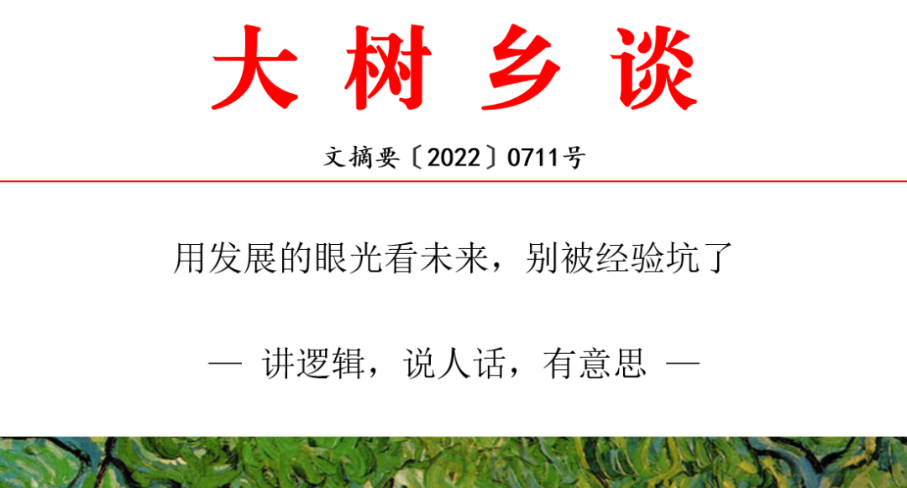

本是案板上的肉，别以为自个赚了

小半年前，小镇曾分享一篇文章《排名都是生意》，谈对出国留学还有QS排名等看法，排名是需要的，起码有个标准可以套，比如牵扯到国外留学回国考公务员有没有报名资格之类。但要说排名能够反映真实实力，那就荒唐了，各种排名的背后其实都是生意。这段时间也有不少留言询问出国、留学和国内发展选择的问题，就集中在一起谈下看法。关于国内的，昨天已经在《“小镇做题家”理应自豪》分享了一些，也有不少朋友留言，涉及隐私没有展示出来，中国仍然有很多机会，通过个人的努力仍然可以过的更好。
今天重点说下国外的选择。
- 1 -
首先，一定要破除对国外不切实际的幻想。中国比以前确实强大点了，但对于西方世界的迷信可不是几年时间能够淡化的，有不少人仍然对国外保持幻想，觉得那是乌托邦一般的世界，工作轻松、政府发钱、医疗免费，现在还幻想出没受疫情影响等等，实际上如果没受疫情影响，中国也不会成为全球制造业国家几乎唯一的顺差国了。（《高处不胜寒，六国合纵攻秦还远吗？》）确实中国同西方在很长一段时间差距非常大，尤其是20年前，当时中国刚刚加入WTO，大量外资、外国人进入中国，让中国着实见到了西方的发达。
那个时候确实是出国的大风口，同样的工作，国外比国内收入高几十倍很常见，大概是月入1000元和30000元的区别，那个时候也是外企最风光的时候，好多进入外企有些头脑的直接买几套一线城市房产，现在也基本衣食无忧了。现在网络上鼓吹出国好、留学妙的，引用的大多数成功案例都是那个时候的，但时代变化太快了，现在出国留学的性价比已经低多了，可以去但已经没有多少优势，并且随着时间推移，越来越不值得。先说出国工作。这几年特别流行说出国干蓝领收入特别高，忽悠不少人出国就业，先不说这些人大多数是黑出去的，无法获得法律保护，自身利益受损只能忍着，单说收入本身，还能有多大优势?比如在欧洲大城市干家政，一个月收入1.5万到2万，看起来确实不错，但是如果在北京这样的一线大城市，一个靠谱的家政一个月也1万起了，甚至帮着接送孩子上学、管顿饭一个月都能收入5、6千，差别还大吗？
有的人可能说这是北京啊，收入高花的多，也没法在北京买房子安家，还是得回去，那还不如去国外搏一把。这话就着实荒谬了，任何一个国家想要在最发达的城市扎根，都不是件容易的事，但作为一名中国人，在中国境内流动起码遵循的社会制度、说的话都是一样的吧，也能找到同乡好友，就算有啥事回趟家也不是啥难事，可要是出国，很多在国内不是问题的全都成了大问题。更何况，去国外干家政的，有几个是通过合法途径过去的，好多就是通过旅游签黑过去，除了每月赚的那些钱，真觉得有未来？
的确，想要中国所有城市都达到西方水平这很不现实，但起码一线城市已经可以与西方发达城市媲美，未来10-15年相信许多二线城市也能接近，仅仅这些城市就能提供数千万工作岗位，只要肯吃苦，又何必舍近求远？ 小镇曾经提到，建议有可能的情况下，尽可能到自己跳起来能够到的大城市发展，关键就是只有这些大城市才能提供更多的发展机会，有太多职业只有大城市才有可能支撑。现在北京已经出现了一些新的职业，收入并不低，而且也能发挥社会价值。比如陪诊员，类似于导游，帮助不了解医院或者时间有限的人加速就医流程，帮着跑各个科室、挂号、拿药，走最便捷的流程，对很多不熟悉医院的人来说，可能挂号、检查、坐诊就得分三次，但如果有一个熟悉的陪诊员统筹，可能一天就够了。
目前这个行业基本按半天为单位收费，一次大概200-300元左右。类似的还有家庭营养师、宠托师等等，这些新兴职业需要有足够庞大的需求基础，能够接受以金钱换时间购买服务，这些都是大城市才能提供。当然这些职业不是没有风险，比如陪诊员，医疗服务非常敏感，如果有一次出了岔子，后果也很严重，这些职业也仅仅是临时性的，绝大多数人不可能以此为终身职业。但是当一个人刚刚踏入社会或者遇到困难的时候，这些灵活的工作可以提供足够的基本保障，让人能够在大城市立足，再求发展。
这些新兴职业在西方是很难看到的，人口密度太小，新兴需求也太少。
- 2 -
要有发展的眼光，不要被过去和现在的经验迷惑。客观的讲，现在移民国外或者出国留学还是可行的，虽然收益低了不少，但还不好说对错，毕竟中国还是发展中国家，大部分地区与西方还是有差距的。但是这仅仅是现在，想想20年前、10年前是什么情况？那个时候会有多少人质疑出国的选择？还是拿最直接的收入来说。2021年美国居民总收入是12.58万亿美元，折合人均3.8万美元，姑且不计算税费扣减问题，直接折算为人民币大概税前每月2万人民币，实际上由于美国各类扣税比例更大、更严格，再加上中美购买力差距，实际也就相当于国内每月税前收入1.2万左右。
根据各地统计数据，2021年京沪广深等一线城市月均收入都超过1.2万元，而据国家统计局统计，2021年全国城镇非私营单位就业人员月平均工资为8903元；最新出炉的全国高校毕业生薪酬排行榜单显示，第50名高校2021届毕业生平均月薪也达到了10253元。20年间，从当初动辄20-30倍的收入差距缩小到现在的2倍最多3倍，那再过10年呢？2倍的收入差距都未必愿意放弃家乡到一线城市打拼，那去另一个国家图啥呢？一定时期内全球总盘子相对固定，高薪酬的工作也就那么多，这些年中国产业正在全面崛起，传统的优势产业不多说了，新兴的光伏、新能源汽车、芯片、无人机、5G、人工智能等等都在抢夺全球市场，中国在全球价值链上的攀登，也在获得越来越多的高薪岗位。
这是此消彼长的关系，我们当然会面临很大阻力，但这个大势是几乎不可逆转的。相信最多10年，中国一线城市平均薪酬超过美欧并不困难，一大批二线城市也将起码达到现在的一线城市水平，大量三四线城市也会跟进。这还没有考虑很多额外因素，比如人民币升值，如果按照目前的发展趋势，10年后人民币兑美元回到5元时代可能性很大，历史上已经有多个国家和地区证明了这一点，那收入打平来的会更快。从人均GDP达到1万美元，到人均GDP达到2万美元的过程中，如韩国、新加坡以及中国台湾等，都有大概30%左右的增幅是由本币升值造成的，而能够突破中等收入陷阱达到人均2万美元的水平，关键就是要有若干个处于国际先进水平的大产业，比如日本的汽车、家电、半导体，韩国的汽车、手机、半导体、造船业，中国台湾的半导体与电子产品等等。
中国缺国际领先的产业吗？2019年中国人均GDP首次突破1万美元达到1.05万美元，到2021年就达到了1.26万美元，提高了20%，以目前情况，2022年大概率超过1.3万美元。这是中国这个全球最大市场+最大制造业国融合产生的巨大动能，超越历史其他国家的发展速度很正常。从人均1万美元到2万美元，美国9年，日本6年，德国11年，英国12年，法国11年，意大利4年，韩国12年，平均也就是9.3年，算起来中国在2028年达到并不奇怪。
那假如现在移民国外，总要过渡几年，纵然能享受几年的收入差，但紧接着就会看到留在国内的人好像啥都没付出就超过了自己，内心能平衡吗? 这一代人也就算了，可下一代呢？涉及人生根本发展的，还是要多想想，不要被短期的冲动蛊惑。
- 3 -
还有朋友问，那不移民，出国留学咋样，毕竟国内高考太卷了。
问题来了：上学到底是为什么？
能够因为国内卷所以选择出国留学的，大概率不是什么学霸，可能在国内本科也不好考上，那基本不可能走研究的路线，以目前国外情况出去读的也基本是混日子的商科之类，留学几年甚至外语都不会的大有人在。那以后怎么办？不就业了吗？现在留学生贬值非常厉害，花几十万上百万留学回来找个几千块钱的工作太常见了，小镇就问过一些企业的人，他们都表示招聘的时候留学生起码降一档，还有的更极端，QS50或者常青藤以下不看。这背后有很多原因，比如国外大学同国内不一样，就算QS前50也有不少很水的专业，国外留学后思维认知也很难适应国内，用起来并不顺手，也没有国内上学的同学圈等等。
上学只是开始，毕业后到底干啥才是最应该考虑的。何况有些孩子想出国留学，根本不是为了学习，就是向往国外传说中的黄赌毒自由，就是为了痛痛快快的玩，把自己的孩子放出去真的考虑过自己孩子的自制力吗?还有的留言问，既然回国找工作不容易，那干脆留在国外，感觉国外年轻人就业率高、收入也高。不得不说国内有些人为了自己的利益真是什么都敢说，的确国外也在引进外国人才，但是有门槛的，出国混文凭的并不在引进范围内。比如今年英国搞全球人才引进，英国官方确定了50所高校，只要是这50所高校的毕业生，就算没有工作也可以直接给签证，中国入围的有4所：清华、北大、港大和港中大。
至于收入前面已经讲了，不再多说了。说白了，如果觉得中国的经济、生活都不行，觉得在中国没机会，那凭什么觉得去国外会更好呢？本身移民就基本是二等公民，人家吸收移民就是为了让移民做贡献，怎么可能把福利给移民呢？当然，对于特别惨的低保确实不错，可有多少人为了混低保大老远的移民？
- 4 -
《排名都是生意》这篇已经说得很清楚了，大学排名本就是生意，那移民、留学、出国打工难道就不是生意了？这几年确实戾气比较重，社会上失业多、就业难，学校里很多孩子因为疫情被关在学校里也有很多抱怨，于是就幻想存在某个乌托邦的理想世界，只要到了那个世界啥都好了。这种幻想正撞上某些吃这碗饭的，各种忽悠就来了。一些具体的玩法不多说了，免得真砸人饭碗，只提醒三点：第一：一定要有发展的眼光，过去和现在的经验不足为凭，一定要想清楚未来会怎样，再做判断。 第二：与自己切身相关、影响深远的决策，决不能轻易相信任何一名中介或者朋友，必须自己去了解清楚，比如自己去查申请的签证到底有什么权利，要去的国家到底生活就业环境如何，如果自己搞不懂，那就别做。 第三：工薪阶层（家庭年收入不到百万的）就别想着移民、留学这事了，能避开很多坑，就立足国内想办法解决困扰自己的问题。唯一特殊的是留学，一是自己孩子确实是学霸，本科能入读真正全球名校名牌专业，又或者国内读完本科去读国外名校研究生；二是在国内肯定上不了最差的大学，家里拿得出几十上百万，那出国混个文凭也可以，但最好陪读，免得孩子被带坏了。
现在信息很发达，只要自己有心，不自己钻牛角尖陷入幻想出不来，想上当其实也不容易。
其他文章推荐
■ 中央部委公务员的待遇与发展
如果喜欢，还请点赞、“在看”和关注吧 欢迎分享，让更多人发现“大树乡谈”